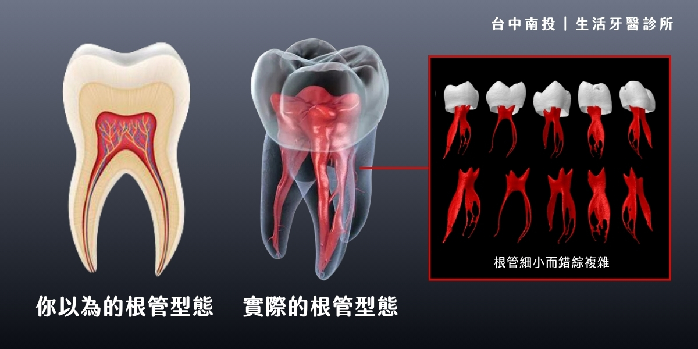
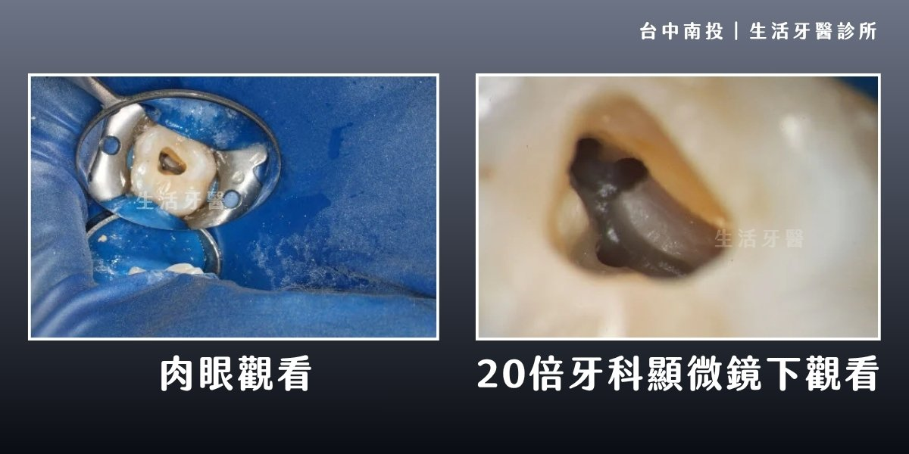
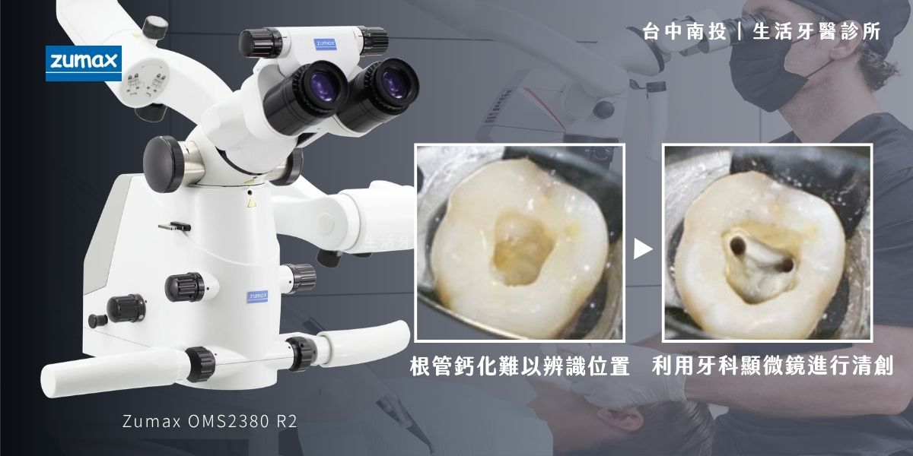

聽到醫師說「這顆牙可能要抽神經」，很多人第一反應會緊張；也有人過去做過根管治療，卻仍反覆悶痛、長膿包，開始擔心牙齒是不是只能拔掉。
其實根管治療的目的，是在感染擴大前清除牙齒內部病灶，盡可能保留自然牙。當根管很細、鈣化、曾經治療失敗，或懷疑有牙裂時，顯微根管能提供更清楚的視野，讓醫師把細節看得更準。
1. 什麼是顯微根管治療？
傳統根管治療主要仰賴 X 光影像、器械手感與醫師經驗判斷，但牙齒內部構造像細小又彎曲的通道，根管直徑可能只有約 0.5 至 1 mm。若有側支根管、鈣化管道、微小裂縫或殘留感染，肉眼不一定能完整辨識。
顯微根管治療透過牙科高倍率顯微鏡與明亮光源，將牙齒內部放大觀察，協助醫師更精準找到根管入口、清除感染組織，並降低健康齒質被過度修磨的機會。
顯微根管不是「更痛的根管治療」，而是讓醫師在更清楚的視野下處理更細緻的牙齒內部問題。

2. 哪些情況適合顯微根管？
不是每一顆做根管治療的牙齒都一定需要顯微鏡，但當牙齒條件較複雜、過去治療結果不穩定，或醫師需要確認細小結構時，顯微設備就能提供很大的幫助。
鈣化根管
長期發炎、年齡增長或過去外傷，都可能讓根管變窄甚至鈣化，增加尋找與清創難度。
二次根管治療
曾做過根管治療卻仍反覆發炎，需要重新清創、移除舊填充物或處理殘留感染。
疑似牙裂
高倍率視野有助觀察裂痕位置與深度，協助判斷牙齒是否仍有保留機會。
- 根管較細、彎曲，或有 C 型根管等特殊構造。
- 牙齦反覆長膿包，或咬合時有悶痛、浮起感。
- 根管內有斷裂器械、舊材料或阻塞，需要更精細地處理。
- 需要根尖手術或精密充填時，需在清楚視野下完成。

3. Zumax 牙科顯微鏡的三大優勢
南投生活牙醫引進 Zumax 高倍率牙科顯微鏡，讓醫師能在放大視野與穩定光源下操作。對根管治療而言，越能看清楚細節，就越有機會精準處理感染位置，同時保留更多健康齒質。
優勢一：更精準，保留更多齒質
傳統治療為了看清根管入口，有時需要擴大修磨範圍。顯微鏡能放大患部細節，讓醫師更有方向地尋找病灶與根管入口，降低不必要的齒質移除。
優勢二：處理高難度個案
面對鈣化根管、二次感染、斷裂器械移除或特殊根管構造，顯微視野能協助醫師更仔細地判斷與操作，提升複雜根管的處理品質。
優勢三：提升治療安全性
在清楚視野下清創與修整，可降低穿孔、過度修磨或傷及周邊組織的風險，讓治療流程更細緻，也更有利於後續假牙或牙冠修復規劃。
4. 南投生活牙醫的堅持：專業設備與細緻醫療
引進 Zumax 高倍率牙科顯微鏡，是南投生活牙醫提升治療品質的一環。對患者來說，顯微根管的價值不只是設備本身，而是醫師能在更精準的條件下評估牙齒狀態，盡力保留每一顆仍有機會保存的自然牙。
若牙齒已經嚴重破壞、裂痕延伸太深，醫師仍會誠實評估拔牙、植牙或假牙重建等替代方案；但在還有保留機會時，顯微根管能成為重要的治療選項。

5. 什麼時候該諮詢顯微根管？
如果牙齒反覆疼痛、曾經根管治療後仍不舒服，或醫師提到根管鈣化、牙裂、二次根管等狀況，建議及早安排檢查。越早釐清感染來源與牙齒結構，越能選擇適合的保存或重建方式。
牙齒反覆悶痛或咬痛
若疼痛拖延太久，感染可能持續擴大。透過檢查確認牙髓、根尖與牙周狀態，能更快找到處理方向。
過去根管治療後仍發炎
二次根管常需要處理舊材料、阻塞或未清潔到的根管，顯微視野能讓治療更細緻。
顯微根管的重點，是增加保留真牙的機會
顯微根管治療不是所有牙齒問題的唯一答案，但在複雜根管、鈣化、二次感染與疑似牙裂的情況下，它能提供更清楚的視野與更精細的治療條件。若您正在猶豫是否要抽神經、重做根管或拔牙，建議先讓醫師完整評估，再一起決定最適合的治療方式。